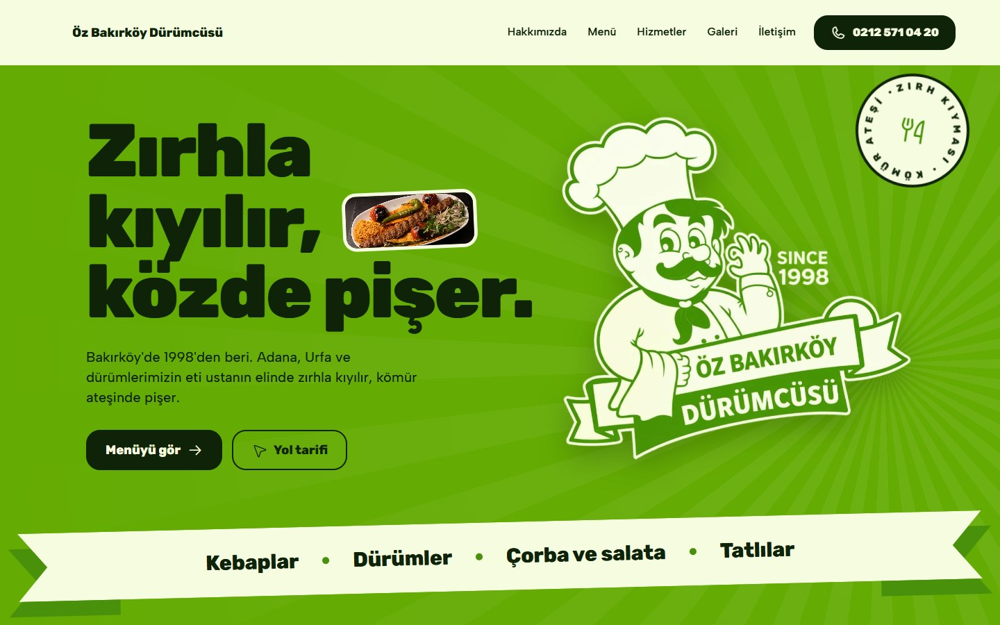

Öz Bakırköy Dürümcüsü
Yeni web sitesinin önizlemesi. Eski sitenin sayfa yapısıyla hazır: ana sayfa, hakkımızda, menü, kategoriler, her yemeğe ayrı sayfa, hizmetler, galeri ve iletişim.
Yeni web sitesinin önizlemesi. Eski sitenin sayfa yapısıyla hazır: ana sayfa, hakkımızda, menü, kategoriler, her yemeğe ayrı sayfa, hizmetler, galeri ve iletişim.
